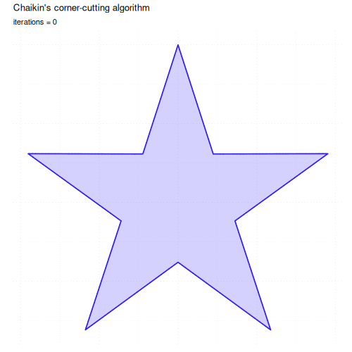
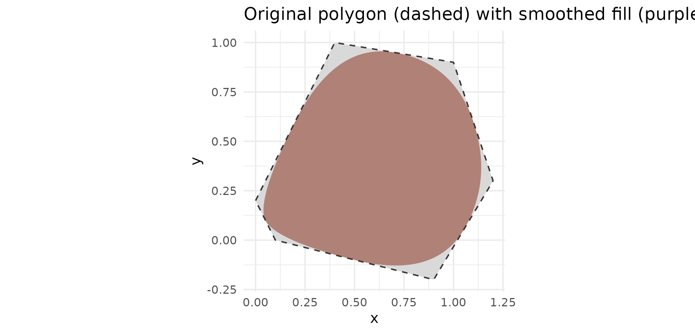
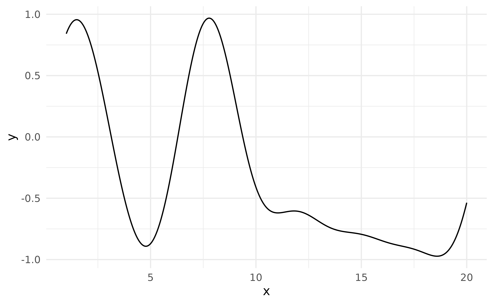
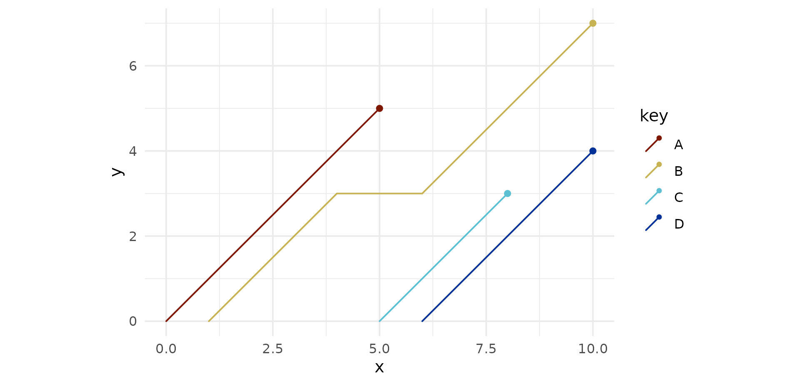
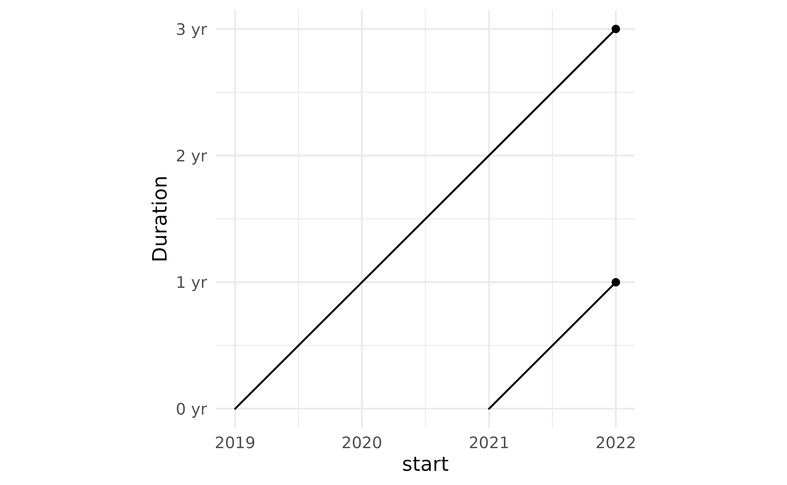

This vignette guides you through examples of functions from the
ggpointless package — an extension of the ggplot2
package.
library(ggpointless)
#> Loading required package: ggplot2
# set consistent theme for all plots
cols <- c("#311dfc", "#a84dbd", "#d77e7b", "#f4ae1b")
theme_set(
theme_minimal() +
theme(geom = element_geom(fill = cols[1])) +
theme(palette.fill.discrete = c(cols[1], cols[3])) +
theme(palette.colour.discrete = cols)
)geom_area_fade
geom_area_fade() behaves like geom_area()
but fills each group with a linear gradient that fades from the fill
colour to transparent at the baseline, drawing the eye to the signal
rather than the area underneath.
ggplot(economics, aes(date, unemploy)) +
geom_area_fade()
Use alpha to set the starting opacity and
alpha_fade_to to control where the gradient ends. The
direction can be reversed — transparent at the top, opaque at the
baseline — by swapping their values.
ggplot(economics, aes(date, unemploy)) +
geom_area_fade(alpha = 0.5, alpha_fade_to = 0.2)
Multiple groups
When your data contains multiple groups those are stacked
(position = "stack") and aligned
(stat = "align") – just like geom_area() does
it. By default, the alpha fade scales to the global maximum across
all groups (alpha_scope = "global"), so equal
|y| always maps to equal opacity.
df1 <- data.frame(
g = c("a", "a", "a", "b", "b", "b"),
x = c(1, 3, 5, 2, 4, 6),
y = c(2, 5, 1, 3, 6, 7)
)
ggplot(df1, aes(x, y, fill = g)) +
geom_area_fade()
When groups have very different amplitudes or you may not use the
default position = "stack" but
stat = "identity" instead, this can make smaller groups
nearly invisible next to dominant groups.
df_alpha_scope <- data.frame(
g = c("a", "a", "a", "b", "b", "b"),
x = c(1, 3, 5, 2, 4, 6),
y = c(1, 2, 1, 9, 10, 8)
)
p <- ggplot(df_alpha_scope, aes(x, y, fill = g))
p + geom_area_fade(
alpha_scope = "global", # default
position = "identity"
)
Setting alpha_scope = "group" lets the algorithm
calculate the alpha range for each group separately.
p <- ggplot(df_alpha_scope, aes(x, y, fill = g))
# alpha_scope = "group": each group uses the alpha range independently
p + geom_area_fade(
alpha_scope = "group",
position = "identity"
)
2D gradient
When fill is mapped to a variable inside
aes(), ggplot2 builds a horizontal colour
gradient across each group. geom_area_fade() overlays its
vertical alpha schedule on top, giving a true two-dimensional gradient:
colour varies left-to-right while opacity fades from the data line down
to the baseline.
set.seed(42)
ggplot(economics, aes(date, unemploy)) +
geom_area_fade(aes(fill = uempmed), colour = cols[1]) +
scale_fill_continuous(palette = scales::colour_ramp(cols))
Device compatibility and the fallback
The 2D gradient depends on Porter-Duff compositing1, a feature
of R’s graphics engine added in R 4.2. When the active graphics device
does not support compositing (e.g. grDevices::pdf()),
geom_area_fade() falls back to a single-colour vertical
fade: the horizontal colour gradient is lost, only the vertical alpha
fade survives, and a one-time message is emitted:
!
geom_area_fade(): the graphics device does not support gradient fills. Thefillcolour gradient is replaced by a single colour. Switch to a device that supports gradients (e.g.ragg::agg_png(),svg(),cairo_pdf()) for the full effect. This message is displayed once per session.
Most modern raster devices — including ragg::agg_png()
and the Cairo-backed png() shipped on Linux and macOS —
do support compositing, so the 2D gradient works out of
the box. In RStudio, go to Tools > Global Options > Graphics
> Backend and select AGG to ensure full support.
geom_arch & stat_arch
Catenary curves and arches
A catenary is the curve formed by a flexible chain or cable hanging freely between two fixed supports. It follows this equation:
\[y = a \cosh\!\left(\frac{x}{a}\right)\]
geom_arch() draws these inverted catenary curves between
successive points. The shape is controlled by arch_length
or arch_height (vertical rise above the highest endpoint of
each segment). By default the arc length is twice the Euclidean distance
calculated for each segment.
ggplot(data.frame(x = 1:2, y = c(0, 0)), aes(x, y)) +
geom_arch(arch_height = 0.6)
Controlling arch height with stat_arch
stat_arch() exposes the underlying computation. Here it
shows the effect of different arch_height values between
the same two endpoints:
ggplot(data.frame(x = c(0, 2), y = c(0, 0)), aes(x, y)) +
stat_arch(arch_height = 0.5, colour = cols[1]) +
stat_arch(arch_height = 1.5, colour = cols[2]) +
stat_arch(arch_height = 3.0, colour = cols[3]) +
labs(title = "arch_height = 0.5, 1.5, 3.0")
The Rice House
A real-world application is the Rice House in Eltham, whose distinctive roofline consists of shallow catenary arched spans rising above vertical columns. The sketch below reconstructs its simplified cross-section:
rice_house <- data.frame(
x = c(0, 1.5, 2.5, 3.5, 5),
y = c(0, 1, 1, 1, 0)
)
ggplot(rice_house, aes(x, y)) +
geom_arch(arch_height = 0.15, linewidth = 2, colour = "#333333") +
geom_segment(aes(xend = x, yend = 0), colour = "#333333") +
geom_hline(yintercept = 0, colour = "#4a7c59", linewidth = 3) +
coord_equal() +
theme_void() +
labs(caption = "Rice House, Eltham (simplified catenary cross-section)")
geom_catenary & stat_catenary
geom_catenary() draws the non-inverted,
hanging-chain form between successive points.
set.seed(1)
ggplot(data.frame(x = 1:6, y = sample(6)), aes(x, y)) +
geom_catenary() +
geom_point(size = 3, colour = "#333333")
chain_length
By default the chain length is twice the Euclidean distance per
segment. Pass chain_length to set an explicit arc length —
longer values make the chain sag more. If the value is shorter than the
straight-line distance a warning is issued and a straight line is drawn
instead.
ggplot(data.frame(x = c(0, 1), y = c(1, 1)), aes(x, y)) +
lapply(c(1.5, 1.75, 2), \(cl) {
geom_catenary(chain_length = cl)
}) +
ylim(0, 1.05) +
labs(title = "Increasing chain_length adds more sag")
sag
sag sets the vertical drop below the lowest endpoint of
each segment, giving you direct control over how much the chain
droops:
df_sag <- data.frame(x = c(0, 2, 4, 6), y = c(1, 1, 1, 1))
ggplot(df_sag, aes(x, y)) +
geom_catenary(sag = c(0.1, 0.5, 1.2)) +
geom_point(size = 3, colour = "#333333") +
labs(title = "sag = 0.1, 0.5, 1.2 (left to right)")
combine chain_length and sag
sag sets the vertical drop below the lowest endpoint of
each segment, giving you direct control over how much the chain
droops:
df_sag <- data.frame(x = c(0, 2, 4, 6), y = c(1, 1, 1, 1))
ggplot(df_sag, aes(x, y)) +
geom_catenary(
chain_length = c(2, NA, 3),
sag = c(0.1, 0.5, NA)
) +
geom_point(size = 3, colour = "#333333") +
labs(title = "sag wins over chain_length") +
ylim(c(-.25, 1))
#> Both `sag` and `chain_length` supplied for 1 segment; using `sag`.
#> This message is displayed once every 8 hours.
geom_chaikin & stat_chaikin
Chaikin’s corner-cutting algorithm smooths a polygonal path by
iteratively replacing each corner with two new points placed at a given
ratio along the adjacent edges. With ratio = 0.25 (the
default) and iterations = 5 the path converges to a smooth
B-spline approximation.
set.seed(42)
dat <- data.frame(x = seq.int(10), y = sample(15:30, 10))
ggplot(dat, aes(x, y)) +
geom_line(linetype = "dashed", colour = "#333333") +
geom_chaikin(colour = cols[1])
#> Warning: The `closed` argument of `geom_chaikin()` is deprecated as of ggpointless
#> 0.2.0.
#> ℹ Please use the `mode` argument instead.
#> ℹ The deprecated feature was likely used in the ggplot2 package.
#> Please report the issue at <https://github.com/tidyverse/ggplot2/issues>.
#> This warning is displayed once per session.
#> Call `lifecycle::last_lifecycle_warnings()` to see where this warning was
#> generated.
Effect of ratio
ratio controls how aggressively corners are cut. At
ratio = 0.5 the new points coincide with the edge
midpoints, producing the maximum rounding possible in a single pass.
triangle <- data.frame(x = c(0, 0.5, 1), y = c(0, 1, 0))
ggplot(triangle, aes(x, y)) +
geom_polygon(fill = NA, colour = "grey70", linetype = "dashed") +
geom_chaikin(ratio = 0.10, mode = "closed", colour = cols[1]) +
geom_chaikin(ratio = 0.25, mode = "closed", colour = cols[2]) +
geom_chaikin(ratio = 0.50, mode = "closed", colour = cols[3]) +
coord_equal() +
labs(subtitle = "ratio = 0.10, 0.25, 0.50")
#> `mode` wins over deprecated `closed`. Use `mode`.
#> This message is displayed once every 8 hours.
Effect of iterations
Each call to cut_corners() halves the sharpness of every
corner. The animation below steps through iterations = 0
(original polygon) to iterations = 10 (near-circular
B-spline), applied to a five-pointed star:

The source script that generates the animation is at
inst/scripts/gen_chaikin_gif.R.
Smoothing a closed polygon with stat_chaikin
stat_chaikin() can be combined with any geom. Pass
geom = "polygon" to smooth the boundary of a filled
shape:
# An irregular hexagon
hex <- data.frame(
x = c(0.0, 0.4, 1.0, 1.2, 0.9, 0.1),
y = c(0.2, 1.0, 0.9, 0.3, -0.2, 0.0)
)
ggplot(hex, aes(x, y)) +
geom_polygon(fill = "grey95", colour = "#333333", linetype = "dashed") +
stat_chaikin(geom = "polygon", mode = "closed", fill = cols[1], colour = NA) +
coord_equal() +
labs(title = "Original polygon (dashed) with smoothed fill (purple)")
geom_fourier & stat_fourier
geom_fourier() fits a truncated discrete Fourier
transform to the supplied x/y observations and renders the
reconstructed curve. Fewer harmonics produce a smoother, low-frequency
summary; retaining all harmonics reproduces the original signal exactly
(up to interpolation artefacts).
set.seed(42)
n <- 150
df_f <- data.frame(
x = seq(0, 2 * pi, length.out = n),
y = sin(seq(0, 2 * pi, length.out = n)) +
0.4 * sin(3 * seq(0, 2 * pi, length.out = n)) +
rnorm(n, sd = 0.25)
)
ggplot(df_f, aes(x, y)) +
geom_point(alpha = 0.25) +
geom_fourier(aes(colour = "n_harmonics = 1"), n_harmonics = 1) +
geom_fourier(aes(colour = "n_harmonics = 3"), n_harmonics = 3)
Detrending
A linear drift in the data will dominate the low-frequency
coefficients, preventing the Fourier series from capturing the periodic
structure. Set detrend = "lm" (or "loess") to
subtract the trend before the transform; it is added back afterwards so
the output remains on the original scale.
set.seed(3)
x_d <- seq(0, 4 * pi, length.out = 100)
df_d <- data.frame(
x = x_d,
y = sin(x_d) + x_d * 0.4 + rnorm(100, sd = 0.2)
)
ggplot(df_d, aes(x, y)) +
geom_point(alpha = 0.35) +
geom_fourier(aes(colour = "as is"),
n_harmonics = 3
) +
geom_fourier(
aes(colour = "detrend = 'lm'"),
n_harmonics = 3,
detrend = "lm") +
labs(
title = "geom_fourier() w/wo detrending",
x = NULL, y = NULL
)
Irregular spacing
The Fourier transform (via stats::fft()) assumes that
observations are evenly spaced in time. If this
assumption is violated, the Fourier curve will not pass through every
data point:
df_gap <- data.frame(
x = c(1:10, 19:20),
y = sin(seq_len(12))
)
ggplot(df_gap, aes(x, y)) +
geom_fourier()
#> Warning: Highly irregular x-spacing detected (CV = 1.4). The uniform-grid interpolation
#> may introduce artefacts.
The last example is certainly somewhat exaggerated, but irregular data is relevant when you work directly with calendar data, for example with monthly time series, since months are known to have between 28 and 31 days and therefore consecutive observations do not have the same interval between them.
geom_lexis & stat_lexis
geom_lexis() draws a 45° lifeline for each observation
from its start to its end. The required aesthetics are x
and xend; y and yend are
calculated by stat_lexis() and represent the cumulative
duration.
df_l <- data.frame(
key = c("A", "B", "B", "C", "D"),
x = c(0, 1, 6, 5, 6),
xend = c(5, 4, 10, 8, 10)
)
p <- ggplot(df_l, aes(x = x, xend = xend, colour = key)) +
coord_equal()
p + geom_lexis()
When there is a gap between two events of the same cohort, a
horizontal dotted segment bridges the gap. Set
gap_filler = FALSE to hide it.
p + geom_lexis(gap_filler = FALSE)
Using after_stat(type) and custom point styling
The computed variable type takes the value
"solid" for 45° lifelines and "dotted" for
horizontal gap-fillers. Map it to linetype to make the
distinction explicit, and use point_colour to style the
endpoint dot independently of the lifeline colour.
p +
stat_lexis(
aes(linetype = after_stat(type)),
point_colour = "#333333",
shape = 21,
fill = "white",
size = 2.5,
stroke = 0.8
) +
scale_linetype_identity()
Date and POSIXct classes
geom_lexis() works with Date and POSIXct objects as well
as numerics. The y-axis shows duration in the native unit of the scale
(days for Date, seconds for POSIXct).
df_dates <- data.frame(
key = c("A", "B"),
start = c(2019, 2021),
end = c(2022, 2022)
)
df_dates[, c("start", "end")] <- lapply(
df_dates[, c("start", "end")],
\(i) as.Date(paste0(i, "-01-01"))
)
ggplot(df_dates, aes(x = start, xend = end, group = key)) +
geom_lexis() +
scale_y_continuous(
breaks = 0:3 * 365.25,
labels = \(i) paste0(floor(i / 365.25), " yr")
) +
coord_fixed() +
labs(y = "Duration")
geom_point_glow
geom_point_glow() is a drop-in replacement for
geom_point() that adds a radial gradient glow behind each
point using grid::radialGradient(). By default, alpha,
colour and size inherit their values from geom_point().
# Basic usage
ggplot(mtcars, aes(wt, mpg, colour = factor(cyl))) +
geom_point_glow()
You can control the alpha, colour, and size of the gradient with these arguments:
glow_alphaglow_colourglow_size
# Customizing glow parameters (fixed for all points)
ggplot(mtcars, aes(wt, mpg, colour = factor(cyl))) +
geom_point_glow(
glow_alpha = 0.25,
glow_colour = "#0833F5",
glow_size = 5
)
Big Dipper
The constellation Big Dipper, drawn with star positions in right ascension and declination.

# source: https://de.wikipedia.org/wiki/Gro%C3%9Fer_B%C3%A4r#Sterne
# colours, coordinates all approximations of course
big_dipper <- data.frame(
star = c(
"Megrez",
"Dubhe",
"Merak",
"Phecda",
"Megrez",
"Alioth",
"Mizar",
"Alkaid"
),
ra_h = c(12.257, 11.062, 11.031, 11.897, 12.257, 12.900, 13.399, 13.792),
dec_d = c(57.03, 61.75, 56.38, 53.70, 57.03, 55.96, 54.93, 49.31),
mag = c(3.32, 1.81, 2.34, 2.41, 3.32, 1.77, 2.23, 1.86),
colour = c("#CFDDFF", "#FFDBBF", "#C7D9FF", "#C8D9FF", "#CFDDFF", "#C7D9FF", "#CBDBFF", "#BAD0FF")
)
big_dipper$x <- -big_dipper$ra_h
big_dipper$y <- big_dipper$dec_d
# Linear size mapping: brighter (lower mag) → larger point
mag_to_size <- \(m) pmax(0.7, (5.5 - m) * 1.0)
ggplot(big_dipper, aes(x = x, y = y)) +
geom_path(colour = "#F5F5F5", linewidth = 0.6, alpha = .6) +
geom_point_glow(
data = big_dipper[-1L, ], # don't plot Megrez a second time
aes(x = -ra_h, y = dec_d, size = mag_to_size(mag), colour = colour,
alpha = mag),
shape = 8,
glow_alpha = 0.75
) +
scale_alpha_continuous(range = c(1, 0.4), guide = "none") +
scale_size_identity() +
scale_colour_identity() +
geom_text(
aes(x = -ra_h, y = dec_d, label = star),
colour = "#bbccdd",
vjust = -1.5,
size = 2.5,
check_overlap = TRUE
) +
scale_x_continuous(
breaks = seq(-14, -8, by = 1),
labels = \(x) paste0(abs(x), "h")
) +
scale_y_continuous(labels = \(x) paste0(x, "°")) +
labs(title = "Big Dipper", x = NULL, y = NULL) +
coord_cartesian(clip = 'off') +
theme(
panel.background = element_rect(fill = grid::linearGradient(colours = c("#1D2180", "#081849")), colour = NA),
plot.background = element_rect(fill = grid::linearGradient(colours = c("#1D2180", "#081849")), colour = NA),
panel.grid = element_blank(),
text = element_text(colour = "#344B73"),
plot.title = element_text(size = 18, face = "bold")
)geom_pointless & stat_pointless
geom_pointless() highlights selected observations —
first, last, minimum, maximum, or all of them — by default with points.
Its name reflects that it is not particularly useful on its own, but in
conjunction with geom_line() and friends, it adds useful
context at a glance.
x <- seq(-pi, pi, length.out = 100)
df1 <- data.frame(var1 = x, var2 = rowSums(outer(x, 1:5, \(x, y) sin(x * y))))
p <- ggplot(df1, aes(x = var1, y = var2)) +
geom_line()
p + geom_pointless(location = "all", size = 3)
Map the computed variable location to
colour to distinguish the four roles:
p +
geom_pointless(
aes(colour = after_stat(location)),
location = "all",
size = 3
) +
theme(legend.position = "bottom")
Order and orientation
Locations are determined in data order. This matters when e.g. the path crosses itself:
x <- seq(5, -1, length.out = 1000) * pi
spiral <- data.frame(var1 = sin(x) * 1:1000, var2 = cos(x) * 1:1000)
p_spi <- ggplot(spiral) +
geom_path() +
coord_equal(xlim = c(-1000, 1000), ylim = c(-1000, 1000))
p_spi +
aes(x = var1, y = var2) +
geom_pointless(aes(colour = after_stat(location)), location = "all", size = 3) +
labs(subtitle = "orientation = 'x'")
p_spi +
aes(y = var1, x = var2) +
geom_pointless(aes(colour = after_stat(location)), location = "all", size = 3) +
labs(subtitle = "orientation = 'y'")

When location = "all", points are drawn bottom to top in
the order: "maximum" < "minimum" <
"last" < "first". Passing an explicit
vector lets you override this:
df2 <- data.frame(x = 1:2, y = 1:2)
p2 <- ggplot(df2, aes(x, y)) +
geom_path() +
coord_equal()
p2 + geom_pointless(aes(colour = after_stat(location)),
location = c("first", "last", "minimum", "maximum"), size = 4
) +
labs(subtitle = "first on top")
p2 + geom_pointless(aes(colour = after_stat(location)),
location = c("maximum", "minimum", "last", "first"), size = 4
) +
labs(subtitle = "maximum on top")

geom_pointless() respects ggplot2’s group
structure and works naturally with facets:
ggplot(
subset(economics_long, variable %in% c("psavert", "unemploy")),
aes(x = date, y = value)
) +
geom_line(colour = "#333333") +
geom_pointless(
aes(colour = after_stat(location)),
location = c("minimum", "maximum"),
size = 3
) +
stat_pointless(
geom = "text",
aes(label = after_stat(y)),
location = c("minimum", "maximum"),
hjust = -.55) +
facet_wrap(vars(variable), ncol = 1, scales = "free_y") +
theme(legend.position = "bottom") +
labs(x = NULL, y = NULL, colour = NULL)
Here it adds horizontal reference lines at the minimum and maximum:
set.seed(42)
df3 <- data.frame(x = 1:10, y = sample(10))
ggplot(df3, aes(x, y)) +
geom_line() +
stat_pointless(
aes(yintercept = y, colour = after_stat(location)),
location = c("minimum", "maximum"),
geom = "hline",
linetype = "dotted"
) +
theme(legend.position = "bottom")